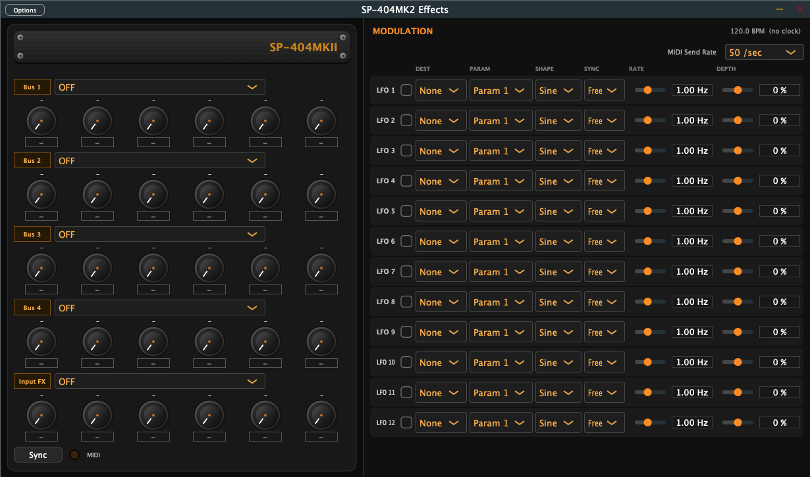

Roland SP-404MK2 — Effects Controller
A dedicated multi-format controller for managing, shaping, and automating every effect parameter on your SP-404MK2 — in real time, from any DAW or standalone.
What it does
All five effect processors — Bus 1–4 and Input FX — mapped to a clean, resizable interface with instant hardware feedback.
12 onboard LFOs — each with its own destination, shape, sync, rate, and depth — automate parameters without touching your DAW.
One button pushes the current UI state directly to your SP-404MK2 over USB — no menu diving, no manual matching.
Simple online license activation on first launch. After that the license is stored locally — no internet required for studio sessions.
Modulation
Click the SP-404MKII logo to open the modulation panel. Each of the 12 LFOs can target any parameter, with its own shape, host-sync or free-running rate, and depth — so you can automate a whole session without ever leaving the app.

Setup
STEP 01
Plug in via USB-C. Open the app and select your SP-404MK2 as the MIDI input and output device.
STEP 02
Run standalone for hardware-only sessions, or drop it into Logic, Ableton, Cubase, or any VST3-compatible DAW.
STEP 03
Dial in parameters visually, automate them in your DAW timeline, or drive them live from a MIDI controller.
STEP 04
Hit Sync Hardware to push your settings directly to the SP-404MK2. What you see is what you hear.
Formats & Platforms
No DAW required. Lightweight session companion.
Full Windows 10/11 support out of the box.
Works in any VST3-compatible DAW. Full automation support.
Native Audio Unit for Logic Pro with full MIDI routing.
Pricing
More From Brkbeats